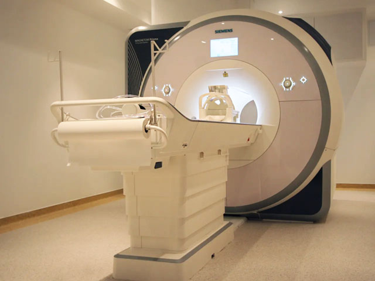
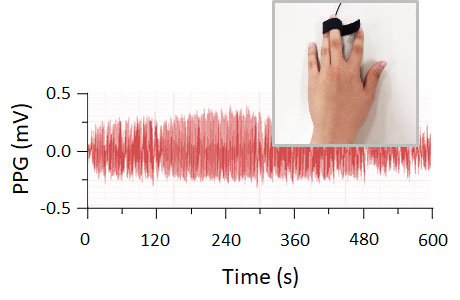
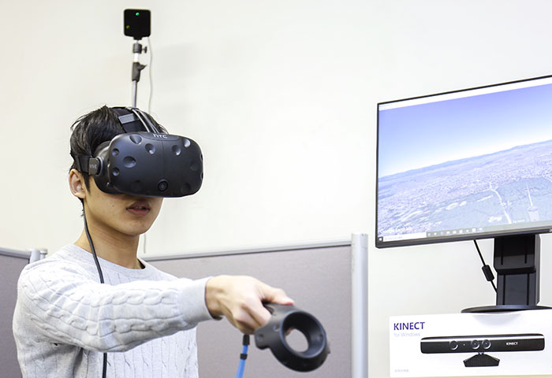
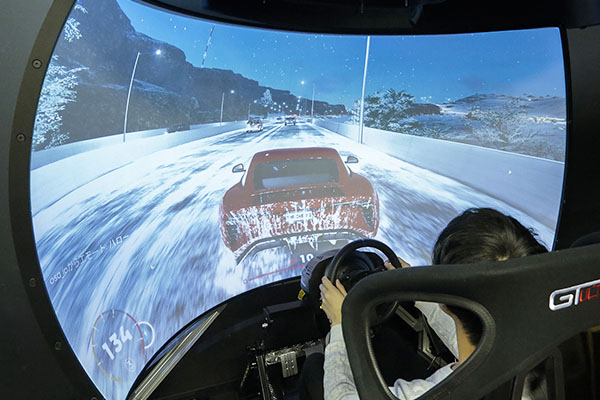

研究概要 | 学生、企業の方々、共同研究を希望される方々
研究の対象は何ですか？
人間の知覚や認知の心的過程に興味があります。 我々は見たり、聞いたりすることで感覚情報を受け取り、主観的な体験を意味づけします。 このように知覚した対象に注意を向け、記憶や意思決定をして、最終的に行動につなげます。 行動すると知覚や認知が再び変化し、その学習が進むことで各自の行動様式が定着していきます。 近藤研究室では、この活動サイクルの入力段階（知覚、意識、認知）で生じる個人差を研究対象にしています。
人間の個人差と聞くと、「あの人は記憶力がよい、あるいは 運動神経がよい」といったことを思い浮かべます。 これらは、認知・学習能力や運動技能に関する個人的な特性を指しています。 しかし、脳システムの入力段階である感覚・知覚においても個人差は存在します。 たとえば、加齢とともに話者の音声が聴き取りにくくなります。 これは老人性難聴と呼ばれ、聴覚入力を情報処理する感覚レベルの機能低下です。 近年では、知覚レベルの個人差が着目されつつあります。 知覚の個人差は「自己意識がどのようにして生じるか」という哲学的な問題とも関連しており、 現代の心理学や神経科学における重要な研究課題となっています。
参考文献
Kondo, H. M., van Loon, A., Kawahara, J. I., & Moore, B. C. J. (2017). Auditory and visual scene analysis: an overview. Philosophical Transactions of the Royal Society B: Biological Sciences, 372, 20160099.
どのような手法で研究していますか？
心理実験では、参加者（大学生、若年者から中高年者まで）の正答率、反応時間、主観評価などの指標を取得します。 学内外の方々にアンケートや質問紙を用いた調査を実施することもあります。[ 実験ブースと別に防音室あり。オージオメータ（聴力検査装置）を導入予定 ]
ATR研究所（京都府精華町）と連携して脳機能計測をおこなっています。 課題に関連した脳活動だけでなく、MRスペクトロスコピ―技術によって脳内の神経伝達物質を定量的に測ることもできます。 [ シーメンス社製 3-T MRIスキャナー Magnetom Prisma]
目的に応じて、課題遂行中の参加者の身体生理反応を同時計測しています。 脈拍や瞳孔径の時間変化を調べ、課題内容と自律神経系の働きの関係を特定します。 [ 脳波計測のための電磁シールド室あり。バイオパック社製 脈波・皮膚電位反応 計測装置あり。Tobii社製 眼球運動計測装置を導入予定 ]
ヴァーチャル・リアリティー空間における知覚や行動の変容を調べています。 [ HTC社製 VIVEシステムあり。 エルミナティー社製 半球ドーム型プロジェクター・コブラシステムあり ]
Photos
   
どのような方々と研究していますか？
国内外の研究機関、大学、あるいは 企業の方々とともに研究を進めています。以下に、共同研究先の実績（一部抜粋）を示します。
フランス国立科学研究センター (CNRS) 知覚システム研究室
ケンブリッジ大学 聴覚研究グループ
カリフォルニア大学ロサンゼルス校 (UCLA) 心理学研究室
ハンガリー科学アカデミー
プリマス大学 心理学部
台北医科大学
東京大学
京都大学
北海道大学
名古屋大学
大阪大学 および 脳情報通信融合研究センター (CiNet)
慶應義塾大学
国立研究開発法人 産業技術総合研究所
日本電信電話株式会社 NTTコミュニケーション科学研究所（客員研究員として）
株式会社 国際電気通信基礎技術研究所 (ATR)
アサヒグループホールディングス株式会社 様（委託研究）
株式会社シネマレイ 様（奨学寄付金）
トヨタ紡織株式会社 様